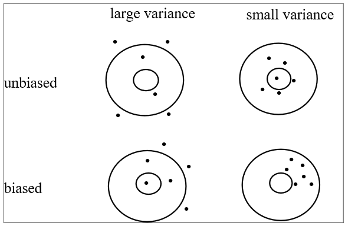
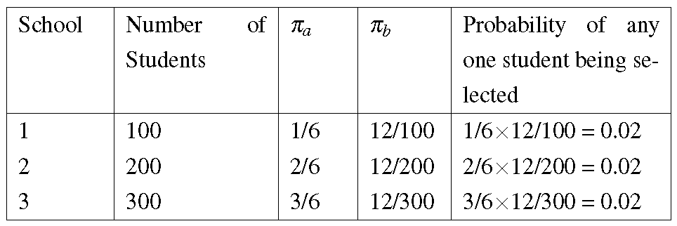
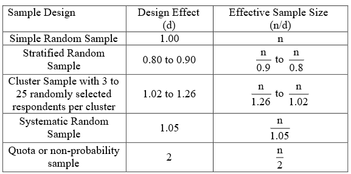

Code
library(tidyverse)
dfm <- tibble(
"Sample size" = 30:1000,
"Margin of error" = 100/sqrt(`Sample size`)
)
dfm |>
ggplot() +
aes(x = `Sample size`,
y = `Margin of error`) +
geom_path() +
theme_minimal()
“Data! data! he cried impatiently, I can’t make bricks without clay.”
— Sir Arthur Conan Doyle, The Vopper Beeches
“The plural of anecdote is not data.”
— Roger Brinner
In every-day life, most of the information we collect is done so almost unwittingly and unconsciously. Nevertheless, we are constantly collecting information, receiving it and passing it to others verbally and in writing, and using it as a basis for decision making.
There’s a saying that “knowledge is power” (attributed to Sir Francis Bacon, 1597). The most powerful knowledge comes from information that was collected in a systematic way. In this course, we are mainly concerned with information which can be coded in numerical form, as data. We can perform operations on data using algebra and arithmetic. This combination of systematic observation and analysis is the most powerful way to build knowledge of our world.
In what follows, we begin by introducing the concept of random variables. Then, we consider different types of data that are collected, and then discuss some practical difficulties that must be overcome in collecting and interpreting any data. We then focus on probability models for data.
Data are records of measurements or observations of our world. For example, you can count the number of heart beats you have in a minute, measure the length of a leaf, or record the colour of the next car that you see. Each time you collect an observation like these, it is likely to be different. There is an element of randomness to it. This is why we often refer to these sorts of observations, collected repeatedly in a systematic way, as “random variables”. Each data point, each observation, is a realisation of a random variable.
We often represent a random variable with an upper case letter, like \(X\). A single observation is often represented by a lower case of the same letter, with a subscript. For example, \(X\) may be the random variable representing the lengths of a leaf of a particular species of tree; if we measure three leaves, we have the three observations \(x_1\), \(x_2\), and \(x_3\). In this case, these values will be numerical lengths, in millimetres, say. But not all random variables are numbers. Random variables and data can take many different forms.
This section discusses different types of data, with some examples.
At this level, objects are classified by qualities or characteristics, and are placed in categories. Often these categories are really only names, for example Ford Focus, Mondeo, or Mustang; Boeing 737, 747 or 767, etc. Hence we describe the data as ‘nominal’. Sometimes confusion arises because the names are replaced (coded) by numbers as in the aeroplane example, or to facilitate data entry into a computer. An example of the latter would be a person’s marital status, coded as 1 (never married), 2 (currently married), 3 (widowed) or 4 (separated or divorced). It would make no sense to perform any mathematical manipulation on these numbers for they are only abbreviations for the categories. Notice that categories should cover all possibilities so that a further category may be needed, namely 5 (in a de facto relationship).
Ordinal data are categorical but the levels have an intrinsic order to them. Typical examples are a 3-point scale for burns - mild, moderate, severe, or a 5-point agreement scale - strongly disagree; disagree; no opinion; agree; strongly agree.
The distances between any two responses may differ. For example, disagree may be perceived by some respondents, although not others, as closer to strongly disagree than to no opinion. For this reason, there are problems in aggregating such responses. There are ‘nonparametric’ statistical methods to cope with these problems. It may be feasible, however, to add or average responses if the sample size is reasonably large and the assumption can be made that the differences in usage of the measures will average out over the sample.
Discrete data usually arises by counting events or objects. Because of this discrete data are usually integers, but not always. For example, one may count the number of accidents last year at a particular intersection. On the one hand you can’t have fractions since you can’t have half an accident. On the other hand a further analysis may require you to state the proportion of the accidents that were nose-to-tail. Then if there were n accidents, the proportion of nose-to-tail ones could be \(\frac{0}{n}, \frac{1}{n}, \frac{2}{n}, ... ,\frac{n}{n}\) - a finite range of values, so the proportion is still discrete.
Without going into the mathematical definition of continuity, we tend to visualise continuous data as having a flowing nature, like water flowing under a bridge, or time passing in a continuous fashion. So one could in theory measure amounts (of water or time) to any level of precision, with many decimal places. Of course in practice, the measured responses will rarely be exactly continuous for, even if the underlying variables are assumed continuous, the instrument used to take readings will only be able to do so on a discrete scale. If the variable of interest is time, responses may be integers (say) 1, 2, … seconds or if the instrument can distinguish to the nearest \(\frac{1}{100}\) of a second, the response will still be discrete but is now 1.00, 1.01 or 0.99. What we can say is that if the unit of measurement is sufficiently small then each individual possible reading will have an infinitesimal probability of occurring and we can basically ignore such individual points and only talk about probability in terms of intervals (e.g. one-second intervals rather than individual 10.99 seconds, say). Thus the practical difference between discrete and continuous data is that with real discrete data, outcomes each have their own separate probability of occurring, but with continuous data, probability is only thought of as associated with intervals.
Statisticians sometimes further distinguish among quantitative variables as being interval or ratio data. In fact some theoreticians write at length about the ‘four levels of measurement’: nominal, ordinal, interval or ratio.
For interval scale responses are assumed to be points on a linear scale. For example on a temperature scale the difference between 10 and 20 degrees is the same as between 30 and 40 degrees. On the usual Fahrenheit or Celsius scale there is a problem with respect to the origin, or zero point, as 20 degrees cannot be assumed to be twice as hot as 10 degrees. It would be meaningful to take differences between measurements or add them together but not to divide or multiply them. In many statistical formulae, deviations from means are involved which obviates the need for an absolute zero, and ratios such as slopes are quite acceptable.
Ratio scales are sometimes regarded the highest level of measurement, and are usually referred to by saying there is a fixed (or absolute) zero. An example would be the number of people in a room (can’t have negatives!) or the time taken to complete a given task. In this case, a reading of 4.2 seconds is twice that of 2.1 seconds. That is, it is meaningful to perform all the mathematical operations of addition, subtraction, multiplication and division.
From a practical point of view, the type of data (categorical - nominal or ordinal; discrete; or continuous) may be crucial to the statistical analysis. It may be convenient to use a statistical method appropriate to ratio level data in the case mentioned above of the time to complete a given task, but the results may also be analysed by a non-parametric technique which actually only requires ordinal data. Similarly it may be satisfactory as a first step to analyse ordinal data by assigning scores {1, 2, 3, 4, and 5} to the categories and running the data through a regression package that assumes Normal data (better approaches are available!). Indeed, it may be difficult in some circumstances to clearly decide on the appropriate level, and the distinction particularly between interval and ratio levels is often unimportant.
The quality of data collected can vary for a variety of reasons. Such common issues with data quality are summarised below under various headings, after defining certain terms relevant to data collection.
Any device used to collect measurements is called an instrument. It may be a physical device such as a measuring rule to gauge the heights of plants or a counting device such as a Geiger-counter for measuring radioactive material. In the social sciences or marketing, the instrument may be such a physical device or it may be a questionnaire which requires a more subjective response.
Measurement error may arise if the instrument tends to give a reading which is too high or too low. Instruments should be checked as often as possible and standardised by checking them against known standards. This is not really possible with questionnaires but one should note the need for pilot testing the questionnaire on a group of subjects who are not in the frame for the survey.
It is a common mistake to assume that the values reported for a variable are direct measurements of that variable. It is more usually the case that the recorded value reflects the desired value but is only an indirect measure of it. A doctor may wish to have some measure of the health of a patient, and, for this reason, a blood pressure measurement is taken, but blood pressure is not a direct measure of health for there are many inherited, climatic and individual effects which also play a part in the blood pressure reading. Even then a typical blood pressure reading would be required, but the mere fact that a measurement is being made will have an effect on the patient and possibly affect the reading. The stress of being in a hospital or a doctor’s surgery may increase the measurement.
It should be noted that the instrument used will only rarely be able to give a direct reading. Temperature is often gauged by the expansion of mercury in glass tube which is an indirect measure and will depend on a number of factors and assumptions, perhaps the greatest being that the expansion of the mercury is linear with temperature. In most experiments the measurements, even if indirect, are closely correlated with the variable under study but such assumptions should not be accepted too readily.
Another question which should be asked of data is who did the recording? Often, questionnaires require that people provide the information themselves, that is by self-reporting. Conscious or sub-conscious influences may have some bearing on the numbers provided. If someone is asked his/her income or workload, the answer may depend on what is perceived by the respondent as the aim of the survey, who is asking the question and who will have access to the results. A seemingly direct question may evoke an indirect answer. If the data is collected by a researcher or technician there may be some possible hiccups on the interface between the respondent and the researcher or the instrument and researcher.
The range of instruments is immense and in the remainder of this section a few examples will be given.
It is common in the study of animals or birds to observe them in their natural settings. This may be done directly such as counting the number of wingbeats per minute or it may be of an indirect approach such as counting the frequency of spore in order to determine the number of animals in a given area. This method of data gathering is often costly and time-consuming. It may help to answer what is occurring rather than why.
As there is a high labour content with this instrument, errors may occur due to tiredness and boredom and coding errors may be a problem depending on how well defined are the categories to be observed. If many observers are involved, there is the added difficulty that the same behaviour may be perceived differently and hence coded differently by different observers.
Observation does have an important part to play in a preliminary study to decide on the areas which require further study. Some researchers tend to bypass or shorten this phase by using a multivariate package on the computer hoping that it will sort out important relationships from a morass of complex data. It is surprising how many novel and correct scientific processes were discovered by such painstaking workers as Darwin and Mendel using only visual observation.
This method can suffer from some of the problems of observation in that it can be time consuming, involve coding errors and be influenced by different interviewers making different judgements.
Interviewers need to be carefully trained so that they allow the person being interviewed to express his or her own views rather than interposing their own feelings or prejudices. On the positive side, a trained interviewer can sense nuances behind supplied answers in a way that observations or questionnaires cannot. A much richer range of responses can then be recorded which makes the interview ideal for pilot studies in particular as it can open up new avenues of study.
Questionnaires are a common method used to collect data and they are very versatile as they can be administered by mail, telephone or face to face. Mailed questionnaires have the advantage of being efficient time-wise for a researcher and may be less threatening to the respondent as they can be answered when and where the respondent chooses. They are appropriate if the respondent needs to give some thought to the questions or where the answers involve sensitive information. Unfortunately, this flexibility can lead to respondents procrastinating or not replying at all. The problem of non-response will be considered later.
How long should the questionnaire be? Almost invariably, it is too long as the researcher strives to obtain as much information as possible. A long and tiresome questionnaire may be counter-productive as the quality of the data may suffer. There has been a lot of research on questionnaire design. Some points to note are that straightforward questions should be asked near the beginning so that the respondent feels at ease while questions requiring judgements or moral decisions should come later.
Mention has been made of some problems associated with respondents giving replies and researchers seeking to understand those replies and to code them. It is worthwhile taking more time to reconsider these processes for the quality of data will invariably be greatly affected by the human interface with the research instrument.
The yields of different varieties of field grasses would seem to be a clear cut and well defined and measured quantity but the yield would be influenced by many factors such as the height of the cut, perhaps the speed at which the mower is operated and the ability of the assistant to mow within the specified boundaries.
With more subjective instruments and human respondents other problems may arise and affect the quality of the data.
A number of possible difficulties may arise:
A question, which is clear-cut and unambiguous to the researcher, may not be so to the respondent who may not understand the question or is not too sure about it because it is framed in unfamiliar language or relates to something outside his or her experience.
The response may depend on a number of extraneous factors such as how cheerful and at ease the respondent feels.
Questions may require remembering certain facts or feelings and memory can be very selective.
The situation may involve many variables while the respondent is asked to respond on only one dimension, which may be perceived as a composite of these other variables. The respondent may not be able to make the judgements necessary to give an accurate response. In one questionnaire, some questions may be answered very accurately while others may be of doubtful value. If responses are added in some way to give a total, there may be a problem in that some of the components have been measured accurately but others are less precise.
Questionnaires can be self-fulfilling prophecies in that the structure and language of the questions suggest the correct or desired responses. Socialising factors may prejudice the results in that most people are hesitant to be rude or to reveal to strangers their deep desires and true feelings, particularly if these are thought to be socially undesirable.
The human interface also arises when someone administers the instrument of the research and some points to note are:
The competence of the researchers and assistants is important. Judgement may be required to understand the response and to make a note of it. In an interview situation, the researcher must listen and try to understand the responses in terms of his or her framework of judgements and in relation to the aim of the interview. With more objective instruments, they must be read accurately but even with such measuring scales one assistant may tend to read high or to record even calibrations whereas another would not do so, which introduces an unwanted variation in the data collection process.
The feelings and beliefs of the assistant may intrude into the collection process. The interaction with the subject in this way may introduce other unwanted variation.
It is a salutary point to note that usually the individual who collects the raw data is an underpaid and possibly under-trained junior who is not highly motivated to produce high quality data.
In some situations, the subject records the response as in self-administered questionnaires, for example, tick a box or circle a number. There may be advantages in this for the respondent is presumably the best person to know what response should be given. On the other hand, the respondent is usually not trained so that there may be a higher incidence of coding errors and questions which are left unanswered. On the other hand, if the researcher does the coding, unwarranted assumptions may be made.
It is conceivable that many human interventions and possible errors may occur in an experiment. For example, a field worker may make certain observations which are studied by another assistant who decides on categories for them while a further assistant codes these categories and finally another person enters them into a computer. Errors are possible at each step along the way.
At the other extreme, it is possible for information to be relayed directly to the computer without human interference. Microprocessors can be used to collect and transmit a whole variety of information. In experiments on animals, sensors can be placed on different parts of their bodies to relay information to the computer. These facilities open up new vistas and challenges for statisticians to monitor large amounts of data, for it may not be obvious how to cope with them.
Non response is very common in all types of data collection and is probably the largest source of non-sampling error. It can occur at three stages of the process. An element may be selected but not found. For example, sheep in a flock may be tagged with individual identification number but one may not be found at the time of the survey. It may be hiding or perhaps has died. If the elements are people, some may not be at home at the time, or, if it is a telephone survey, the telephone may be cut off from certain selected individuals.
It may not be possible to take a measurement. This happens quite often with people as some may forget, or refuse, to answer the questionnaire. The measuring instrument may not work or give a ludicrous response which may be deleted by the technician. An element may be contacted, a measurement taken but the result not written down in the correct place, or could be so illegible that it cannot be used.
Wherever possible, nonresponse bias should be reduced by making every possible effort to obtain a response. When interviewing people about a particular product, market researchers will often make two call backs (that is three attempts in all) to reach a subject if that person is not at home on the first call. Cost factors will often prohibit further attempts. Surveys by mail often include a stamped addressed envelope or even money or a token for merchandise to arouse moral scruples and force a reply.
The problems arising from nonresponse can be illustrated with a simple example: Suppose that 200 people are asked their opinion on a certain issue, only 100 reply of whom 70 are in favour, 30 opposed.
What percentage of the original 200 are in favour?
The answer depends on the assumptions made.
| Case | In favour | Opposed | Total |
|---|---|---|---|
| Respondents | 70 | 30 | 100 |
| Nonrespondents | 70 | 30 | 100 |
| Total | 140 | 60 | 200 |
Thus the estimate of the number in favour is then 140/200 or 70%.
| Case | In favour | Opposed | Total |
|---|---|---|---|
| Respondents | 70 | 30 | 100 |
| Nonrespondents | 0 | 100 | 100 |
| Total | 70 | 130 | 200 |
The estimate of the number in favour is 70/200 or 35%.
It may be reasonable in other circumstances to assume that the nonrespondents were quite happy with the status quo and were in favour. Then the estimate of the number in favour is 170/200 or 85%.
It may be possible to make other reasonable assumptions if additional information is at hand on the whole batch of 200. We can massage the results in different ways but none of them is very convincing. The moral is: Try to reduce nonresponse by all legitimate means.
Here we consider a variety of ideas and problems relating to taking a census. Most of these concepts carry over directly to sample surveys as well. However sample surveys have additional complicating factors relating to choice of sample, and using statistical methods to quantify the extent of sampling error (including random error) involved.
In a census, every element of the population is contacted, counted and other quantities collected or evaluated. Conceptually, the procedure is straightforward and perhaps trivial. In practice and particularly if the population is large, difficulties often arise. There are three critical operations in census taking, namely identifying an element as belonging to the population under study, making contact with that element and obtaining the appropriate information in a suitable form.
It may be helpful, at this point, to introduce some terminology to formalise the process of taking a census. The population at which the study is aimed is termed the target population . To obtain information from this population it is necessary to have a means of operationalising the data collection. This involves a frame, which may be a listing of the elements of the population or it may be an operating method such as a geographical map, suitably divided into smaller, manageable areas. A further step is necessary to contact each element of the frame and collect the appropriate information. The resulting set of elements on which completed, usable data has been collected could be called the actual population. It is possible to consider these populations as consisting of the measurements under study rather than the elements, be they objects, animals or people. More will be said on this later.
Census taking can then be represented by the sequence
target population \(\Rightarrow\) frame \(\Rightarrow\) actual population.
Ideally, these three populations would consist of the same elements but in practice they could be represented in Figure 1).

A simple example of a census would be the exercise of collecting information from the students in a particular school. Suppose the school authorities want to discover, from each student, the number of younger siblings who may wish to attend the school in future years. At first glance, the target population is well defined, as the current students in the school. However queries could arise such as whether adult or part-time pupils should be included. The most suitable frame would, no doubt, be the school roll. Hopefully, the roll would accurately reflect the students currently at the school but it may not exactly match the target population. Some students may be temporarily visiting the school, either staying with relatives or a parent who has a local, temporary job. On the other hand, some students on the roll may be visiting another part of the country, or may be in a hospital or other institution, and there may be some doubt whether their absence is temporary or permanent.
Frame inefficiencies may well occur to the extent that the frame does not match the target population. The collection of information on siblings may encounter snags as some students may not respond due to absence, or parents or student may refuse to divulge the required information. The actual population may then fall short of the frame, which contains the maximum possible elements, which in this case, are students.
With a census, there is usually some ambivalence as to whether the objects under study are the elements of the population (such as plants, animals or people) or the measurements on these elements. The measurements may simply be the count, or may be such variables as the length, weight, salary or any other measure. The selection process will focus mainly on the elements, but from then on attention will be focussed on measurement and then analysis. These two ideas can be incorporated into the notation \[U=\left(L,Y,X\right)\] Here \(U\) denotes the population, \(L\) is the set of labels \((i = 1,2,...,N)\) attached to the \(N\) elements of the population, \(Y\) is the measurement, or response, under study from each element in the population, and \(X\) is an associated variable measured on each element in the population.
For example, for the census carried out on the students of a high school, the labels \(i\) could be the identification numbers of the students on the roll \(L\). The measurement on the \(i^{th}\) student, represented by \(y_i\), may be a variable such as the daily expenditure at the school tuck shop. The associated variable, \(x_i\), for the \(i^{th}\) student may be the student’s weight. On the other hand, the mark a student gets on a standardised test when entering high school may be \(x_i\), with \(y_i\) the school certificate mark of that student in mathematics.
In this example the survey may, in practice, be carried out as a sample rather than a census but conceptually it would be possible, to carry out such a census. Another point which may need discussion and clarification is whether the population represented by \(U\) should refer to the target population, the frame or the actual population; usually \(U\) would refer to the target population.
A number of errors may occur in collecting information even when a census is being taken. The elements of the census must be contacted, a measurement or observation taken and this information recorded. As no sampling procedure is involved, it seems reasonable to label errors as non-sampling errors.
The goal of the survey will be to produce summary statistics such as the population mean and standard deviation. If errors are committed in the collection process, the summary statistics may be incorrect. It is possible that these errors will cancel out but we cannot rely on this. The errors may lead to a tendency for the calculated mean to be too low and the mean is said to be biased. Alternatively, the bias may be on the high side and, at times, it may be difficult even to decide the direction of the bias although we know there is a strong possibility of it occurring.
It may seem a contradiction in terms to speak of errors in selecting elements of a census for the aim is to contact every element in the population. From the discussion in the above section, it is clear that some difficulties may arise in the sequence from target population to frame and these difficulties are often called frame inefficiencies.
A survey may be carried out on all exporting firms in New Zealand. The frame may be a published list of exporting firms but the list may be out of date as some firms have gone broke or been taken into receivership. There may be firms not on the list but which, nevertheless, do engage in some form of exporting besides their other activities.
Once the elements of the frame have been located, there remains the step of extracting information from them. For some reasons particular firms in the frame may not wish to take part in the survey so that errors may occur in this second step also.
It is not appropriate to carry out any statistical test or form a confidence interval on census data because they are measurements on the whole population. Statistical inference is using data from a sample to make statements about the broader population from which the sample was taken. When we do a census, we have the whole population, so we are no longer making inferences.
Next, we’ll consider sampling from the population instead of taking a census.
Sampling as a scientific exercise is a peculiarly twentieth century phenomenon despite the fact that sampling has been used in an ad hoc manner from earliest times. Sampling, as in sample surveys, was accepted only after many years of argument and counter-argument. The most intensive and extensive discussion took place at the International Statistical Institute (ISI) meeting in Berne in 1895. Kiaer explained the ‘representative method’ he had used in Norway. Further meetings of the ISI enabled Kiaer to expand and clarify his approach. Four principles have been identified in Kiaer’s reasoning:
Representativeness in terms of adequate representation of identifiable groups in the population.
Selection of objects to be as objective as possible.
The reliability of the results should be assessed. Each survey should be divided into a number of distinct parts using a different representative method for each. Comparison of results of these parts would provide evidence as to how much faith could be placed in the results of the survey.
Finally, Kiaer insisted on a complete specification of the method of selection.
Bowley (1906) provided a theory of inference for survey samples which helped to answer the question of how accurate an estimate from a large sample was. Using a Bayesian argument, his approach was only valid for the case where the chances were the same for all items of the groups to be sampled.
It was not until Neyman (1934) that random, rather than purposeful, sampling was given a strong mathematical justification. Neyman showed that it did not matter if equal or unequal probabilities were used provided that probabilities were known in advance. His arguments were not based on specific distributions as in Bayesian approaches so that the touchstone of randomness seemed to have finally won the day. For an interesting discussion on the controversies in the history of survey sampling, see Brewer (2013).
There is a widespread belief that a census, rather than a sample, should be taken if at all possible. Most people feel secure with a census but are somewhat uneasy about only collecting a sample and using mathematical means to estimate properties of the population. Lack of sufficient resources of money, trained manpower and so on is often the motivation to reject a complete enumeration. A compromise, of course, is necessary in that a cheaper, quicker collection method using a sample may result in less accurate estimates. Often, however, the reduction in accuracy is slight compared with the considerable reduction in cost. Time is also a factor in that a census may require officials to collect data over a long period which may raise difficulties in that the responses would be meant to relate to a particular point in time.
An important point which is often overlooked is that a complete enumeration is only superior to a sample if the data is collected and processed at the same high standard. Often, researchers try to collect too much data for the resources and trained man-power available which results in a large amount of data whose accuracy and validity is suspect. A well collected sample will always be of more use than a shoddily taken census. Another common fault is the attempt to collect too much information from every element, be it an object, animal or person. A questionnaire has a tendency to expand to the point that it frustrates or annoys the recipient or the personnel administering it. In countries where monthly household surveys are held, their results are invariably more accurate than the less frequent population censuses.
One classical case in which a sample is preferable to a census is that of destructive sampling in which each object is tested until it breaks or expires. For example, testing the number of hours a light bulb shines before it burns out. The selected items are useless after the test so that there are compelling reasons for limiting the size of the sample. It is salutary to realise that many people selected to give information or to take part in tests or experiments will be affected in some ways. The process of collecting data will itself affect the elements in the sample so that they may no longer be representative of the population about which inferences are to be made. For example, in some quarters, there is a fear that political opinion polls do not merely reflect public opinion but to some extent form it.
Nonsampling errors, nonresponse in particular may introduce biases. Unfortunately, the size and/or direction of these biases are generally unknown. Due to the smaller size of a sample, it may be much easier to reduce nonresponse than in a much more cumbersome enumeration. Call-backs and other procedures which have been devised to reduce nonresponse are very time consuming so that they are rarely feasible when the number of elements is large.
To reduce unwanted effects such as interviewer biases, statistical tests can be employed. These require certain assumptions about the population and selection method which have been used. We can never be sure that the assumptions associated with these tests are valid. If the sample suggests that they may not be true, some action must be taken such as a data transformation to make the results more ‘Normal’.
“Randomization is too important to be left to chance.”
– J. D. Petruccelli
The sample should be similar to the population. It is easier to state this than it is to define what is meant by the statement and how to achieve this similarity. Randomisation can be used to obtain a sample which, on average, has similar properties to the population. Not only is this so but it is possible to estimate how closely the sample reflects the population and attach a probability to the possible discrepancy. It is not possible to state with certainty that a particular measurement from a sample is peculiar although it would be possible to attach a probability to such an unusual value. Similarly, it would be possible to make a probability statement about the sample itself if the sampling process was replicated.
If the distribution of the variables is known, randomisation enables the distributions of some combinations of the sample values to be calculated. In common with other areas of statistics, it is more likely that the distributions of these variables are not known although these distributions may be hypothesised. The validity of any conclusions will be subject to the proviso that the assumptions are correct. If the distributions are not known the Central Limit Theorem (CLT) may be invoked so that the approximate Normal distributions may be assumed for some estimators.
On the other hand, there are enticing reasons for placing restrictions on the sample to make it similar to the population in many respects such as proportions in certain subgroups. Surveys are rarely carried out as a theoretical exercise and results may only be believed if those who commissioned and financed the survey believe in its accuracy. If the sample appears peculiar in relation to some known variables, the validity of the survey may be called in question. To obtain a representative sample to fit the known, or assumed, distribution in the population, the elements may be selected purposely. The resulting estimators of variables may be very accurate but there is no way of determining how accurate they are.
As a compromise, it is possible to use a randomisation scheme with certain restrictions. A simple example is that of stratified sampling with different probabilities of selection for each stratum. This procedure can be extended to allow each element in the population to have its own probability of inclusion into the sample. Alternatively, a randomisation approach can be used to draw a sample which may be rejected, however, if certain restrictions are not fulfilled. An important point is that the sample should be chosen with a known probability. Another point to note is that the known information about a population will involve a variable, for example \(X\), whereas the measurements to be collected are from a another variable, say \(Y\). The efficacy of the survey will depend heavily on the accuracy of \(X\) and the relationship between \(X\) and \(Y\).
It should be noted that restrictions may limit the number of elements selected from particular subgroups so that it may not be reasonable to invoke the Central Limit Theorem and assume that estimators in these subgroups follow a Normal distribution.
A sample is a subset of a population. There are innumerable ways of drawing a sample so that there is a richness and variety in sampling methods which do not exist in census methods. The first step in obtaining a sample is the same as for taking a census in that a frame must be set up. The sample is then drawn from the frame so that the sequence is target population \(\Rightarrow\) frame \(\Rightarrow\) sample.
The relationship between population and sample is shown in Figure 2 (which is almost the same as Figure 1).

It was pointed out above that a population, in practice the frame, could be written as \(U=\left(L,Y,X\right)\). By contrast probability samples could be denoted by \(S = \{P_r, l, y, x\}\). The curly brackets, {.} are meant to indicate that there are many samples which can be drawn from the one population. Note that \(S\) is the set of all possible samples, \(s\), selected under the probability scheme \(P_r\). The labels in the sample as well as the sample values for \(Y\) and \(X\) are denoted by lower case letters. In general, the convention is to use capitals when referring to the population but lower case for the sample. The term \(P_r\) indicates the probability, \(P_r(s)\), of the sample \(s\) being selected.
Another way to look at this is to consider the probability that a particular element, or label, be included in the sample. Let \(\pi_{i}\) be the inclusion probability for the \(i^{th}\) label. A special but common occurrence is the equality of the \(\pi_{i}\) for \(i\) from \(1\) through \(N\) and, in this case, the \(P_r(s)\) will be the same for all \(s\) in \(S\). In this case, the selection is said to be EPSEM, standing for equal probability of selection, or it is said that the elements are self weighing as the probabilities do not depend on the particular labels which have already been selected. The most obvious example of a self weighting sample is that of a simple random sample but multistage samples can also be arranged with unequal probabilities at each stage but such that the inclusion probabilities are equal.
Samples will be liable to the same kind of biases as a census as well as others inherent in the sampling process. Major sources of biases in samples are classified in Figure 3. On the one hand, the biases can be split into those which occur at the time of selecting the sample, while others occur at the stage of collecting and operation on the data. On the other hand, a division can be made into sampling and nonsampling, depending on whether the bias occurs in a random or fixed manner. The nonsampling errors can be further subdivided according to whether an observation is made or not.

Briefly, the cells in Figure 3 refer to the following problems:
Frame inefficiencies: To select a sample, a frame, which is often a listing but may be such as a map, is used. If certain items are missing or occur more than once, these items and the others in the frame will have a probability of selection which is different from what it should be.
Biased estimation: In this course, only unbiased estimates such as the sample mean are considered.
Non-observation: Non-observation could be due to frame inefficiencies or not being able to locate the item.
Non-response: The item, say a particular person, may be located but he or she may be not at home or refuse to answer all or some of the questions.
Purposive Selection: When selection occurs deliberately rather than at random then biases will often intrude. In quota sampling, the interviewer is told to contact so many people over 45, or male, or in some other category. The personal choice involved in this selection could introduce bias.
Interviewer bias, coding errors: Certain characteristics of the interviewer may incline the subject to respond in a certain way. With another interviewer, the subject may respond differently. Once the data is collected, errors can occur in an amazing number of ways in coding the answer, transcribing to summary sheets, entering the data into a computer, as well as error in computer programming.
Other errors are termed random or stochastic in that probabilities are involved so that samples, but not censuses, may suffer from these errors. The assumption is made that the measurement is correct but the estimator varies depending on the sample which has been drawn. Rather than giving the name error to this outcome it would be preferable to speak of sampling variation.
Our aim in sampling and in all statistical estimation, is to find an estimate which is close to the population parameter. Of course, we have a problem in defining “close” as we do not know if our sample is representative of the whole population or whether it is an unusual one. If the sample yields an estimate of the population parameter we can at least talk about the expected or average distance of the estimate from the parameter.
An illustration of the ideas of bias and variance is that of shots fired at a target. If the shots are widely scattered, they exhibit a large variance. If they are spread around the target so that on average they are equally scattered around the bulls-eye (neither too high nor too low etc.), we could say they are unbiased shots of the bulls-eye. The four possible cases are shown in Figure 4).

Notice that bias can occur in census as well as sample data, but we can only talk about variance in a probability sample. From a single sample yielding one value of a statistic, it is not possible to estimate the bias in the statistic but an estimate of the variance of the statistic can be obtained from the variation in the sample.
Each sample is not an exact match of the population so that the resulting estimator will invariably differ from the population parameter it is estimating. As the parameter is unknown, the actual difference between the estimator and the parameter is also unknown so that it is important to have certain assumptions about the distributor of the variable under study and distribution of the resulting estimator. Mathematical theory is often available to indicate the amount of bias and variance in the estimator.
Usually, a sampling method is chosen to ensure that the resulting estimator is unbiased. A peculiar sample does not necessarily mean that the estimator is biased but it may be difficult to convince others that this is so. For example, it may turn out that the sample consists only of females even though the population is evenly divided between the sexes. If females and males give similar responses to the variable under question, the strange composition of the sample in this case would not affect the value obtained for the estimator. On the other hand, a sample which seems to be representative of the population on certain variables may yield a strange value for the estimator. One must assume, for there is no proof as the parameters under study are unknown, that if the sample is chosen carefully, which usually means that an appropriate randomisation scheme is employed, the measurements and hence the estimate obtained will be representative of the population.
Often, the sample and the estimator are chosen in such a way that the estimator is unbiased. The sampling scheme and the estimator can be considered as two sides of the same coin so that the estimator is chosen to fit the sampling scheme. Furthermore, the sampling scheme can be chosen in such a way that the variance of the estimator is a minimum subject to certain constraints such as cost and time. At times an estimator is chosen deliberately to be biased if in so doing the variance is made smaller. To compensate for this for it may be that a biased estimator will ensure that it is closer to the parameter of interest than an unbiased estimator. These considerations are of more interest to the analysis of data than to their collection; so this topic will not be considered at length here.
In sample surveys, an estimator may turn out to be biased because the probability of selection of certain elements is different to what the researcher thought. If the frame used to select people is a list of homeowners, wealthy owners would have a higher probability of selection for they are more likely than less well off people to own more than one house. Consequently, an owner of multiple houses would have a high probability of selection which would bias the estimate towards such people unless the multiple ownership is taken into account. This source of error is termed frame inefficiency and it is likely to arise whenever there are discrepancies with the sampling frame.
In sample surveys, the emphasis is on the selection of the sample although this is a means to the end of obtaining estimates; testing hypotheses etc. The selection procedure has been studied in great detail by researchers in this area.
Some authors have pointed out that the texts on sample surveys often spend an inordinate amount of space on simple designs which are based on randomisation. Students may gain the impression that sample surveys actually are carried out with simple random sampling or something similar. From a theoretical point of view, simple random sample is attractive in that the limited assumptions needed allow the mathematical properties of the estimator to be easily demonstrated.
Sample surveys were developed from the turn of the twentieth century based on a stratified sampling approach. Practitioners are usually content to modify and restrict sampling methods to avoid obvious biases and to ensure that the coverage of the sample is as wide as possible in relation to geographical spread or in relation to certain demographic variables. Such tampering with designs mitigates against exact calculations and proofs of properties of various statistics, but the practitioner is more likely to be reassured that his/her approach and estimators seem reasonable and are likely to be unbiased and accurate. Political considerations of adequate geographical spread may be considered more important than specific statistical claims about estimators.
Researchers like to have control over the selection of elements so that they may not be disturbed by the use of systematic sampling. The deliberate selection of typical elements may be seen as reasonable. Statisticians of more mathematical bent may find such approaches distasteful as they seem to act against the use of limit theorems which can be invoked to underpin asymptotic results such as asymptotic unbiasedness and consistency.
Restrictions on randomisation also cast doubt on the validity of conclusions using the Central Limit Theorem. Unrestricted randomisation cast doubt on the assumed normality and conclusions drawn from this.
Sample surveys are usually characterised by finite and fixed populations, sampling with or without replacement with known sample sizes, denoted by \(N\) and \(n\), respectively. Consider a lottery with 1,000 tickets and 3 prizes, that is \(N\) = 1,000, \(n\) = 3. If it is possible for a ticket to be eligible for more than one prize, one number could be drawn out of a hat to give the first prize winner. This number would be returned to the hat as it would also be eligible to win the second and third prize. This illustrates sampling with replacement. In sampling without replacement, a ticket could win at most one prize.
In this lottery example, the population is restricted to the finite, known size of 1,000 and the sample of winners is also of finite, known size of 3. The finite population makes the notation rather untidy. The labels in the sample, \(l = 1, 2,...,n\) are a subset of the labels in the population, \(L = 1, 2,...,N\) and the order of the labels is usually different in the sample from the population. For example, the first label chosen in the sample may be label 27 in the population. For the associated variable of interest, the first observation in the sample (\(y_{1}\)) will then equal the \(27^{th}\) in the population (\(Y_{27}\)).
Sampling without replacement does cause some problems as the probability of choosing an element depends on the set of elements or labels which have already been selected unless the inclusion probabilities are all equal. Calculating the variance of an estimator is often made trickier by sampling without replacement and involves finite correction factors. Estimators of the population variance are also more involved than they would be with replacement. A brief overview of common sampling schemes follows.
In our lottery example, each of the 1,000 tickets has the same probability (1 in 1,000) of winning any one prize and, indeed, of winning any one of the 3 prizes (3 chances in 1,000, that is, 1 chance in 333).
If the researcher has no information about the sampling frame, except perhaps the number of elements \(N\) present, simple random sampling may be a feasible approach. It is common in experimental design when treatments are allocated to experimental units. In quality control, simple random sampling is often used.
If the population is large, at least in relation to the sample size, it would usually be inefficient to use simple random sampling for it would require considerable time and cost to select and contact the elements of such a sample. If the sampling fraction is large, (say) more than ten percent, it may be reasonable to use simple random sampling as it is likely that the sample will be spread reasonably evenly throughout the population.
The more additional information available, the more structured the sampling design can be. The additional information may be of an exact dichotomous or polychotomous nature such as the natural division of the frame into three disparate geographical areas. The additional variable may be continuous such as the age structure of the frame. In other cases, the information may be assumed rather than known for certain. For example, the educational level achieved by every person in a frame may be listed but this information may be a few years out of date. In these cases, a sample survey may be taken based on the age structure of the frame, but the conclusions will only be valid to the extent that there has been no change in this age structure.
The additional information can be the basis for the logistics of the survey as different parts of the frame may require more intensive sampling or different methods of organisation. For example, if the frame covers rural and urban areas, the urban sectors may be reached by public transport, but respondents may not be at home during the day as they are likely to be at work. The rural areas may involve other difficulties due to the scattered nature of the population.
The obvious danger is that sampling decisions made for administrative ease may hinder accumulation of data and may discredit inferences drawn from the resulting sample. For example, one must query whether the responses collected by one interviewer are likely to be considerably different from those of another, whether data collected by face-to-face methods can be aggregated with data collected by telephone interviews; whether data collected on some elements can be assumed to be similar to other data collected at a later time; whether responses to questions which must be translated into different languages, or explained in simpler English to someone of limited education or facility in English, can give responses which can be aggregated with responses to these same questions when not translated. There are no easy answers to questions such as these but researchers should be aware of such difficulties. Whenever possible, the peculiarities in the collection method should be noted and made available to the reader so that he/she can better judge the conclusions of the survey.
Estimators with a low variance are likely to be more accurate in that they reflect population values more closely. The use of additional information can lead to a reduction in the variance of estimators such as sample means and sample proportions. This gain in efficiency will depend on the strength of the relationship between the additional information and the variable under study. At times, this relationship may be estimated but, at other times, it must be taken for granted.
If the population is small but there is no information available on other aspects of the population, a simple random sample may be appropriate. Other sampling schemes may be used, though, for some of the following reasons:
If the population size is large, it will be rather clumsy to try to select a simple random sample. If the population is spread out geographically, then considerable cost may be involved unless the sample is grouped in some way.
Under certain conditions, or assumptions, it may be possible to use a scheme which leads to more accurate estimates - accurate in the sense that the variance and/or bias is reduced.
A simple random sample of (say) supermarkets in New Zealand may, by chance, consist only of stores in Auckland. The results of this survey may be viewed very sceptically by readers and, more importantly, by those who are funding the survey.
Stratified sampling is a very versatile approach. It can be easy to implement, and can also lead to more efficient estimation of parameters. With stratified sampling, the population is divided into groups called “strata”, and then random samples are taken from each stratum. The advantages of this approach are:
It is a flexible approach, as strata can be designated in different ways.
Each stratum can be treated as a separate population so that strata could be surveyed at different times and even different ways. For example, a survey in NZ could be divided into north and south island, urban and rural; the rural sample could be contacted by telephone but the urban by face-to-face interviews. One stratum could involve systematic sampling; other involve simple random sampling.
If we have information regarding the variation in strata then the resulting estimator (of the population mean for instance) could be more precise (less variance) than in simple random sampling if the more variable strata are sampled more intensely.
It is probably the most common method employed in sample surveys.
The sample is spread throughout the population.
The variance of an estimate from stratified sampling is usually equal to, or less than, the variance of an estimate from simple random sampling. It would be sensible to sample more heavily the larger strata. This is the approach taken in proportional (stratified) sampling in which the sample size in each stratum is proportional to the size of the stratum. Proportional sampling is appropriate when all the strata are equally variable. When this is not the case the more variable strata are sampled more heavily.
For some investigations, it is advisable to consider the population as being composed of clusters or groups and to proceed with the sample survey by selecting certain clusters and collecting measurements from (usually) a random selection of the elements within the chosen clusters. Cluster and stratified sampling differ in that all the strata are sampled whereas only some of the clusters are sampled. It is usual to have a large number of small clusters in cluster sampling but a small number of strata in stratified sampling. Consider a sample survey of the pupils in a school. The classes within the school may be considered as possible strata or possible clusters. There are advantages for cluster sampling in this case.
Ease of administration. It will be easier to select certain classes in a school (say) and interview a random sample or all of the students in those classes rather than selecting students from all the classes in the school.
A listing of all the children is only necessary for the selected classes.
Confidentiality and/or independence of response may be aided by this approach. It would take longer to collect information from all the classes in the school and the longer it takes the more likely it is that respondents will talk among themselves about the questions before the researcher can collect his/her information. If the whole class is presented with the questionnaire at the same time, confidentiality is more likely to be preserved.
Locating elements (students) is easier, travel (between classrooms) will be reduced, and it is easy to divide responsibility between interviewers.
In some cases, it makes more sense to collect measurements on whole clusters rather than just a few individuals within each selected cluster. This is probably true in the case of the above example. Surveys on TV watching collect information on a family is another example where this is probably true. If the TV set is on, it may be difficult to pin down which members are watching as some may claim not to be interested (although they may know quite a lot about that program). Alas, there must be some payment for these benefits and this is reflected in the higher variances of cluster sampling estimators over those of simple random sampling.
In this section, we shall only consider a particular type of systematic sampling, namely that which includes a component of randomness, as this allows probability statements to be made.
In the simplest presentation, the frame is assumed to consist of \(N\) elements where \(N\) = \(kn\) with \(n\) being the required sample size. A random digit, \(i\), in the range of l through \(k\) is chosen as a starting point and then every \(k^{th}\) element from then on is placed in the sample. The sample then consists of the elements \(i, i + k, i + 2k,\) etc. Clearly this approach is likely to produce a sample which is evenly distributed over the entire sampling frame, and it is therefore likely that the sample will be representative of the population. This is particularly true when the sampling frame is sorted geographically. However, when this is not the case, the variance of the estimators obtained using systematic sampling will generally be greater than those obtained for simple random sampling.
Probability-proportional-to-size sampling, or PPS sampling, can be thought of as an extension of stratified sampling. Stratified sampling allows the flexibility for the probabilities of selection to vary with the size and characteristics of the strata. PPS sampling takes this a step further so that each element has its own probability of selection.
The procedure requires that an associated variable be known so that each element in the population has a measure of size associated with it. This variable may be a related variable whose values are known from a previous census. For example, auditors usually check only a sample of all the accounts in existence. The size of each account is crucial. So the large value accounts should be checked more intensely than the smaller accounts. This is achieved by giving each account a probability of selection which is proportional to its value. This is called Dollar-Unit Sampling.
Associated with each sampling method is a particular form of estimator for the population parameters of concern. If an element has a high probability of selection, its effect must be reduced when an estimate is formed or, otherwise, the estimate will tend to be too large.
If the \(i^{th}\) observation is \(y_{i}\) and the probability that this element is chosen into the sample is \(\pi _{i}\), it turns out that:
Estimate of population total = \(\sum \frac{y_{i} }{\pi _{i} }\) = sum(each observation in sample/its probability of selection)
This is easy to show with simple random sampling when \(\pi _ i =\frac{n}{N}\) for \(i=1,2,...n\). Let \(Y\) = population total, \(\bar{Y}\) = population mean, and \(Y=N\bar{Y}\). We estimate \(\bar{Y}\) by \(\bar{y}\) = mean of the sample and we estimate \(Y\) by \(N\bar{y}\). If we write the estimate of the population total as \(\hat{Y}\), we have: \[\hat{Y}=N\bar{y}= N\sum \frac{y_{i} }{n} =\sum \frac{y_{i} }{\left({\tfrac{n}{N}} \right)}\] Notice that the summation is over all observations in the sample. For simple random samples, the probability that each observation is selected is \(\frac{n}{N}\) so that the estimate of the total is, indeed, the sum of each observation divided by its probability of selection.
For stratified sampling with \(k\) strata, the estimated total and mean are, respectively \[\hat{Y}=N_{1} \bar{y}_{1} +N_{2} \bar{y}_{2} +....+N_{k} \bar{y}_{k}\] and \[\bar{Y}=\left(N_{1} \bar{y}_{1} +N_{2} \bar{y}_{2} +....+N_{k} \bar{y}_{k} \right)/N\] Assume that stratum \(j\) contains \(N_{j}\) elements and that the sample size for this stratum is \(n_{j}\), then the probability that an element in the \(j^{th}\) stratum is selected is \(\frac{n_{j} }{N_{j} }\). As an example, suppose that a stratified sample of adult males, in full time employment in NZ, was taken to determine the number of working days lost in the previous year and also their party political preference. In this hypothetical example, the strata are urban versus rural. The results were shown in Figure 5).

Estimate of total days lost \(\hat{Y}=N_{1} \bar{y}_{1} +N_{2} \bar{y}_{2} = 400,000\times 5 + 100,000\times 2 = 2,200,000.\)
The estimate of the total number who prefer Labour is \[\hat{Y}=N_{1} p_{1} +N_{2} p_{2} = 400,000 \times 0.5 + 100,000\times 0.3 = 230,000.\] Notice that proportions are means and fit into this structure quite naturally by defining
\[x_i = \left\{ {\begin{array}{*{20}c} 1 & {{\text{if the element has the property understudy}}} \\ 0 & {{\text{otherwise}}} \\ \end{array}} \right.\]
Notice also that we could estimate \(\bar{y}\) by \(\hat{Y}/N\) so that:
Estimate of total days lost per person = \(\hat{Y}/N\) = 2,200,000/500,000 = 4.4.
Estimate of proportions who prefer Labour = \(\hat{Y}/N\) = 230,000/500,000 = 0.46.
These same formulae for estimating the population total and the population mean are appropriate for probability proportional to size (PPS) sampling. However, sampling without replacement makes the formulae rather complicated so we will not consider the details here.
Large, and even moderately sized, sample surveys are often multistage surveys. The probability that an element is selected becomes the product of the probabilities of it being selected at each stage. As a simple example, consider 3 schools having 100, 200 and 300 students, respectively, and suppose that 12 students are to be selected from one of these schools. This could be carried out in a two-stage survey with the first stage being the selection of one school by probability proportional to size (PPS) sampling. In the second stage, 12 students are selected from the chosen school. Let \(\pi _{a}\) be the probability of choosing a particular school and \(\pi _{b}\) the probability of choosing a particular student (given that his/her school has been chosen). The probability of selecting a particular student is \(\pi_{a} \times \pi_{b}\); see Figure 6.

In this example, each student has the same probability of being selected which has been brought about by the PPS sampling of the schools. It would be possible, in this small example, to use only a one stage procedure such as a simple random sample of 12 students from a list of the 600. Alternatively each school could be viewed as a separate stratum and a stratified sample of students could be chosen. Of course, if 4 students are chosen from each school, those in the smallest school would have a better chance (4 chances in 100) of being selected than those in the largest school (4 chances in 300). On the other hand, if 2 are chosen from the first school, 4 from the next and 6 from the largest then each student will have the same probability of selection.
These EPSEM, equal probability of selection methods, have the advantage that it seems “fair” to allow each person the same probability of selection but, also, it makes for simpler and neater formulae for estimates and their variances.
Samples are often selected because they are easy to obtain. Many psychology experiments referred to in the literature make use of long suffering students in introductory psychology courses. Quite often, volunteers are sought for experiments. Indeed, even when a probability sampling scheme is used, some subjects will withdraw so that the actual respondents are, in a sense, volunteers. Sometimes, people are accosted in the street or supermarket by market researchers or media reporters. The sample is by and large an opportunity sample for it is difficult to obtain a random sample under such conditions. Any generalisations from such a sample should be treated with some suspicion.
A snowball sampling approach is used by medical authorities to track down possible sufferers of sexually transmitted diseases. All former contacts of a known sufferer are contacted, if possible, and former contacts of theirs also contacted. Both volunteer and snowball sampling are purposive methods in that no randomisation is employed.
Another purposive sampling method is that of quota sampling. The idea is to make the sample representative of the population at least for certain variables. The quotas required in the sample may be decided by partitioning the sample into males and females, and also partitioning it by age groupings. The interviewer would be required to find the stipulated number of respondents in each cell of the sample. Although the sample is representative on the given variables, one is not sure how representative it is in terms of the responses obtained. Furthermore, being a purposive sample, it is difficult to make probability statements about estimators.
It would be difficult to estimate the number of deer in a large untamed area such as some parts of the South Island. The target population of deer is very large but also is very hard to locate. One sampling approach would be to use recent deer droppings as a sampling frame, and for researchers to walk in a straight line noting the number of occurrences of droppings in (say) a 2 meter wide path. If the researchers are spaced at intervals of 20 meters then one could assume actual number of droppings of 10 times that obtained in the sample. Further assumptions would be needed to extrapolate from the number of droppings to the number of deer. A more direct approach would be afforded by a capture-recapture method in which a sample of animals is captured, tagged, released and then at a later date a further sample is captured. The proportion of tagged animals in this second sample indicates the size of the population. A number of assumptions must be made such as the uniform spread of the tagged animals throughout the areas of the second sampling. The initial capturing may affect the animals in unusual ways, by making them shy tending to avoid capture in future or making them tamer so that they do not fear capture as much on a subsequent occasion. The method of tagging may also be disadvantageous causing stress. Other assumptions need to be made about the distribution of the untagged and tagged animals. A number of different estimators have been suggested to obtain unbiased and efficient estimators of the number of animals in the population.
Figure 7 shows a fictitious example of how samples of four people are drawn from a population of 20 people.

In reality, sampling issues are not as simple as in the above example. Most large studies require quite a complex form of sampling involving layered sampling frames and combinations of design strategies. A typical design for an urban study is described below. The first layer consists of 20 regional areas; the second layer consists of all the municipalities within each regional area; the third layer consists of all the suburbs within each municipality; the fourth layer consists of all the city blocks within each suburb and the fifth layer consists of all the households within each city block. Judgement may be used to select only 5 of the 20 regional areas, one typical of the central regions, one each typical of the northern, southern, eastern and western regions. Next a systematic sample of municipalities is chosen (from a list sorted by postal code) for each of these regional areas, a sample of suburbs is chosen (stratified by socio-economic level) within each municipality, a simple random sample of city blocks is chosen within each suburb and a simple random sample of households is chosen within each city block. Such designs aim to be cost effective in terms of producing a representative sample at reasonable cost. However, complex designs require complex analyses, so try to keep things as simple as possible. The important criteria for the selection of an appropriate sample design are stratification, randomisation and cost. Note that non-response also has cost implications in that a survey with a high non-response rate is more costly than a survey with a good response rate. Of course the sample size also has an influence on cost and this provides opportunities for sample design/sample size trade-off. In the following discussion we assume that there is a 100% response rate. In other words sample size refers to the number of (good) sample elements. When only a 50% response rate is expected for a mail survey it means that the number of questionnaires distributed should be double the required sample size.
Unfortunately, it is the available funds rather than research requirements that often determine what the sample size will be. We will therefore not ask the question How large a sample do we need? Instead we will ask What can a certain sample size \((n)\) do for us? The answer to this question depends on the sample design that is to be used. A quantity called a design effect \((d)\), related to the variance of the estimate, is used to measure the quality of a sample design. The larger the design effect (variance), the worse the design in terms of producing representative samples. The design effect is used to compute an effective sample size \((e)\) from the actual sample size \({n}\) using the formula \({e=}\frac{n}{d}\). The effective sample size provides a more meaningful indication of the number of independent (useful) responses than the actual sample size. Figure 8 roughly shows the typical ranges for the design effect \((d)\) associated with the various sample designs.

For a simple random sample the design effect is treated as one. So, for a simple random the effective sample size is the same as the actual sample size. Each observation in the sample is doing a full job. You will see that a quota sample typically has a design effect of 2, producing an effective sample size, which is half the actual sample size. This means that each observation in a quota sample is only doing half a job. However, in the case of a stratified random sample, the design effect is typically less than one indicating a very good design and producing an effective sample size that is greater than the actual sample size \((n)\). In this case each observation is working overtime. Clearly a design effect of more than one means that the sample is not as efficient as a random sample would be, while a design effect of less than one means that the sample if more efficient than a random sample would be.
Most opinion polls give a margin of error (this term will be formally defined later on) when they give the result of their survey. This is the level of inaccuracy associated with the sample result. For example, we hear that a poll indicates that a proportion \(p\) of 40% of voters support National but the margin of error could be 6.1% if the effective sample size is only 300. When the purpose of the research is to estimate some proportion (i.e. percentage) then the margin of error can be calculated using an approximate formula (namely \(2\sqrt{p(1-p)/e}\) where \(p\) is the expected proportion and e is the effective sample size). As indicated in Figure 9, the margin of error declines as the effective sample size increases. By setting \(e\) equal to the actual sample size divided by the design effect we can estimate the margin of error for any design. If the margin of error is too big it means that the sample size needs to be increased. Unfortunately this is usually the case. This example is hypothetical but it illustrates the general relationship between the margin of error and the effective sample size.
library(tidyverse)
dfm <- tibble(
"Sample size" = 30:1000,
"Margin of error" = 100/sqrt(`Sample size`)
)
dfm |>
ggplot() +
aes(x = `Sample size`,
y = `Margin of error`) +
geom_path() +
theme_minimal()
In Figure 9, the effective sample size required for a margin of error of 10% is 100. Since the actual sample size equals the effective sample size for a simple random sample this means that the size of the simple random sample must be 100 if the margin of error is 10% when a population proportion is estimated. However the effective sample size depends on the sample design. The actual sample size required for a given margin or error also depends on the sampling design. The actual sample size required in order for the margin of error to be 10 is highest for quota samples at 200 and lowest for a random stratified sample at 80. For the random cluster sample, an actual sample size of 120 will produce this margin of error.
The following rule of thumb can be used when sample results are to be generalised to a population. Firstly, if fairly sophisticated (multivariate analysis) is required then the effective sample size should be at least 200. Secondly, there should be at least four sample elements for every variable included in the study. However, this rule and the above formula are irrelevant when the population is relatively small or when we do not wish to generalise our findings to the population. In studies of this nature smaller sample sizes are sufficient. But the relative percentage to the size of the population should be large. For example if the population is of size only 100, an effective sample of size 80 is needed to achieve a certain degree of margin of error when the true population proportion is about 0.5. However, only an effective sample of size 370 is needed for the same margin of error if the population size is 10,000. The effective sample size needs to be increased only to 385 if the population size is 100,000. The moral is that percentage sampling is a fallacy, and that the absolute sample size is more important than sampling a fixed percentage of the population.
In this Chapter, we have focussed on the problem of collecting data from the whole population, that is the taking of a census. In any data collection, the following questions should be addressed:
WHAT are collected? This involves measurements at different levels; direct or indirect measures.
WHO does the collecting? If self administered, questions must be clear and unambiguous. If an enumerator fills in a form, there may be problems of interaction with the respondent.
HOW are the data collected? Direct observation; interview; questionnaire.
BIAS is the tendency, in the long run, for an estimate to be too high or too low.
Bias may occur in
SELECTION of elements (which may be objects, animals or people). The population selected may not exactly match the target population.
COLLECTION of measurements or answers to a questionnaire may not match the true state of affairs.
NON-RESPONSE is the single largest cause of bias.
The idea of sampling is very important in statistics. This Chapter has briefly pointed to some of the important ideas involved in the sampling process.
Randomisation is a foundation idea for it enables us to use statistical theory to make inferences. This raises the question of the relationship between the sample, which is known, to the target population with its unknown parameters. The sample should be similar to the population; it should be representative of the population. Randomisation allows us to generalise from the sample to the population.
A census may be deficient in that it suffers from biases in the observations, or failure to collect observations. A sample may have the same biases as a census along with sampling biases due to the sampling method. A sample also suffers from variation, for example, the sample mean is likely to be close to the population mean although it is very unlikely to exactly equal it. However, if the sample has been drawn at random, it is possible to attach a probability to how close the sample mean will fall from the population mean. Sample surveys differ from sampling in general in that the populations are of finite size and the sampling is carried out without replacement.
In this course, we only consider sampling where randomisation is involved. A simple random sample may be appropriate when the population size is small and particular chosen elements can be easily located. For larger populations, it may be appropriate when the sample size is small and particular chosen elements can be easily located. For larger populations, it may be appropriate to use systematic sampling in which a random start point is chosen and then every \(k\)th element after that. If \(k\) = 20, for example, the sample would be 1/20 of the population, that is a 5% sample.
In stratified sampling, a sample is chosen from each stratum. The resulting estimator may be more precise (that is, have smaller variance) than simple random sampling.
In cluster sampling the population is divided into clusters; certain clusters are selected; usually randomly selected elements of the selected clusters are included in the sample. Although this method is very convenient, the resulting estimate may be less precise than simple random sampling.
Probability proportional to size can be thought of as the extension of stratified sampling in which each element in the population is given a specified probability of inclusion into the sample.
Each sampling method has its own estimator which is a weighted sum of all elements in the sample. For simple random, systematic, cluster and proportional stratified sampling, the estimate of the mean is the sample mean.
In this chapter, a number of issues have been raised but many loose ends remain. Simple random sampling is rarely used in practice but it is a standard against which other schemes may be compared. Stratified sampling points to the fact that different strata can be treated differently. One obvious difference, which seems to be contrary to popular wisdom, is that different proportional sample sizes may be chosen, and indeed should be chosen, for the different strata. Cluster sampling emphasises the need to decide on the elements under study, for example the family rather than the individual in TV ratings surveys.